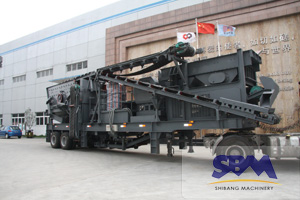

Mobile crushing station in an aggregate processing
 portable jaw crusher is our company launched a new development of the rock crushing equipment, greatly expanding the field of crushing operation concept. The concept of the design aim is to stand in the position of customers, to remove the broken ground, crushing obstacles environment to customers as the primary solution. Really provide project operating hardware facilities, high efficiency and low cost for the customer.
In recent years, urban construction, highway, railway and other infrastructure construction makes the construction aggregate demand growth speed, also put forward higher requirements of variety and quality of sand. Many people choose to river gravel, pebbles to make sand, but because of construction sand is a kind of local materials, simply relying on foreign sources and long-distance transport is not a long-term solution, the construction waste is broken for the production of sandstone aggregate, can make the construction waste reuse effectively ,alleviate the gravel supply problem,reuse the construction waste .
Because the construction waste substances contained in complex, stacking space is limited, the traffic is not very convenient, general equipment is hard to handle. Mobile crusher station according to the material type and the coarse crushing, fine crushing and screening system selection, can be a single group of Raiders independent operation, also can form a system configuration unit joint operation. The mobile crushing station for the integration of group work, the site can be the first line of the broken material, from the material from the scene and then crushing, processing of intermediate links, greatly reducing the material transport costs.
mobile crusher station advantages
Mobile crushing station flexible configuration, can according to the actual design , very suitable for construction waste crushing. The mobile crushing station using fully possess the characteristics of environmental protection and energy saving, reduce noise in production process, reduce dust and other pollution factors have been solved properly. high processing capacity , the maximum to meet construction waste treatment demand.
Brick, stone, concrete and other waste crushed by the crusher, can replace sand, used in masonry mortar, mortar, concrete cushion and so on, but also can be used to make bricks, paving brick, grille, color brick and other building materials.
Along with the development of city, the mobile crushing station used in construction waste crushing processing applications is more widely, the comprehensive utilization of construction waste in the project has been put into use, has great investment prospects.
Portable Crusher Gallery